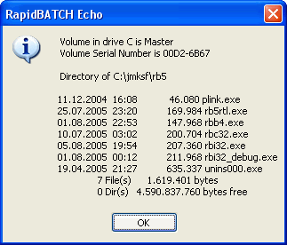

Running external programs
Especially when developing batch programs it is frequently necessary to call external programs, automatizing certain methods to get the desired result. For this purpose, RapidBATCH provides even four different possibilities.
First of all, there is the classic SHELL-instruction, which is used to start any program which will run parallely to the RapidBATCH script. SHELL expects as first parameter the absolute or relative path to the file that should be exectued, and as second parameter a so called show mode. This show mode defines the application window behavior at startup, but is not supported by every Windows program that can be run.
Possible show-mode values are 'SHOW', 'HIDE', 'MINIMIZED' and 'MAXIMIZED'. 'SHOW' displays the application's main window in its default size, 'HIDE' does not display the window, and is only recommended to use with programs or batch-files running in the background. The modes 'MINIMIZED' and 'MAXIMIZED' are minimizing or maximazing the window of the application that is executed.
Take a look at the following script, running the Windows "Notepad" text editor.
shell 'notepad.exe', 'show'
echo 'And now we run another Notepad with a maximized window!'
shell 'notepad.exe', 'maximized'
echo 'Finished!'
end
Next to the SHELL-instruction, RapidBATCH is also providing the CALL-instruction. CALL is nearly equal to SHELL, and also expects the same parameters, but it features one important thing that SHELL is not featuring: CALL runs a program in a modal-mode; This means, that the RapidBATCH-script that executes an external program or DOS command using CALL, is halted until the called program is finished or closed by the user.
This is an example, running Notepad again via CALL.
call 'notepad.exe', 'show'
echo 'And now, we run Notepad again using another show mode...'
call 'notepad.exe', 'maximized'
echo 'Ende!'
end
Oftenly it is also necessary to run the good old MS-DOS commands Windows features over the DOS prompt. There is also a way to do this using SHELL or CALL by running the CMD.EXE or COMMAND.COM command interpreter, but RapidBATCH does also feature a single instruction that directly allows the execution of any DOS commands: The SYSTEM-instruction.
Example:
rem Pinging www.jmksf.de ...
system 'ping www.jmksf.de'
end
By using CALL or SHELL, it is also possible to run DOS-commands in the background, without an upcoming DOS-box. The next example uses the READFILE-function to read out the file DIR wrote its output to. The READFILE-function will be discussed later in a more detailed way.
rem run DIR-command and save it temporary to test.txt
call 'cmd.exe /C dir *.exe >test.txt', 'hide'
rem read test.txt and display it
readfile [dir_output] = 'test.txt', '0'
echo [dir_output]
rem finally, delete test.txt again!
delfile 'test.txt'
end

The script from above, displaying the content of the current directory from the DIR-command within an ECHO-messagebox.
The last, but also mostly primitive method to run external programs is the OPEN-instruction. OPEN can be used very versatile, e.g. it runs programs (same as a SHELL-instruction call using the mode 'SHOW'), opens documents with the corresponding program (e.g. by specifying a .DOC-file, the file is loaded to Word or WordPad) or opens internet URLs in the system's default-browser.
Some examples using OPEN:
open 'calc.exe'
open 'C:\jmksf\rb5\license.txt'
open 'http://www.rapidbatch.com'
Copyright © 2000-2006 by J.M.K S.F. Software Technologies, Jan Max Meyer
All rights reserved.